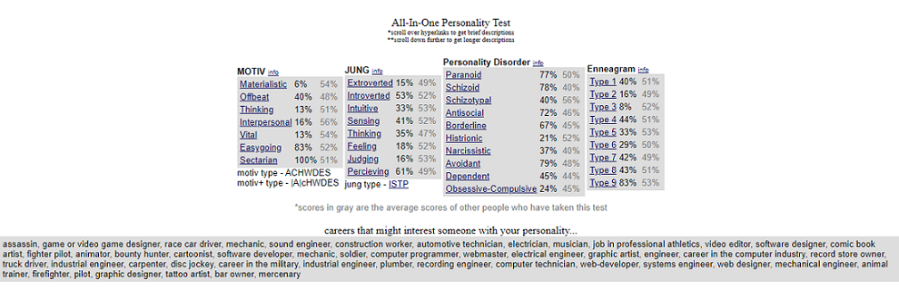

I am not one for mottos or quotes from people, however, I am very big on learning lessons from those wiser, more experienced and far more well-read people than I. One of the best lessons I have learned is:
To questions things, especially people in positions of power. Because it is in questioning things that you may gleam more of an understanding of someone’s actions and it is through questioning things that you will come up with solutions when you have stumbled upon road blocks.

I agree with most of the results of the Personality Test, most of which I was already aware. However, it is very clear that the creators of this test have a political bias. Specifically, a Western developed nation (These nations include places such as The United States, Canada and some European countries) left-leaning bias.
For example; they assume that because I strongly believe that in order for people to co-exist in a nation, their cultures/morals have to be similar, that I believe that people of different cultures living in one country is a bad thing. This is an asinine assumption to make.
Though I do have to admit, they were spot on with the careers suited for my personality. My favourite is assassin, maybe not in this life, but you never can tell 😂.
I would also like to add that my result for the column Jung, formally known as the Myers-Personality Type Indicator, ISTP is one of the rarest personality types for women to have. This is at least according to Truity.
You can get more information about what Truity has to say about the ISTP personality type here.
If you are curious about your own personality type, click here to do the test too.